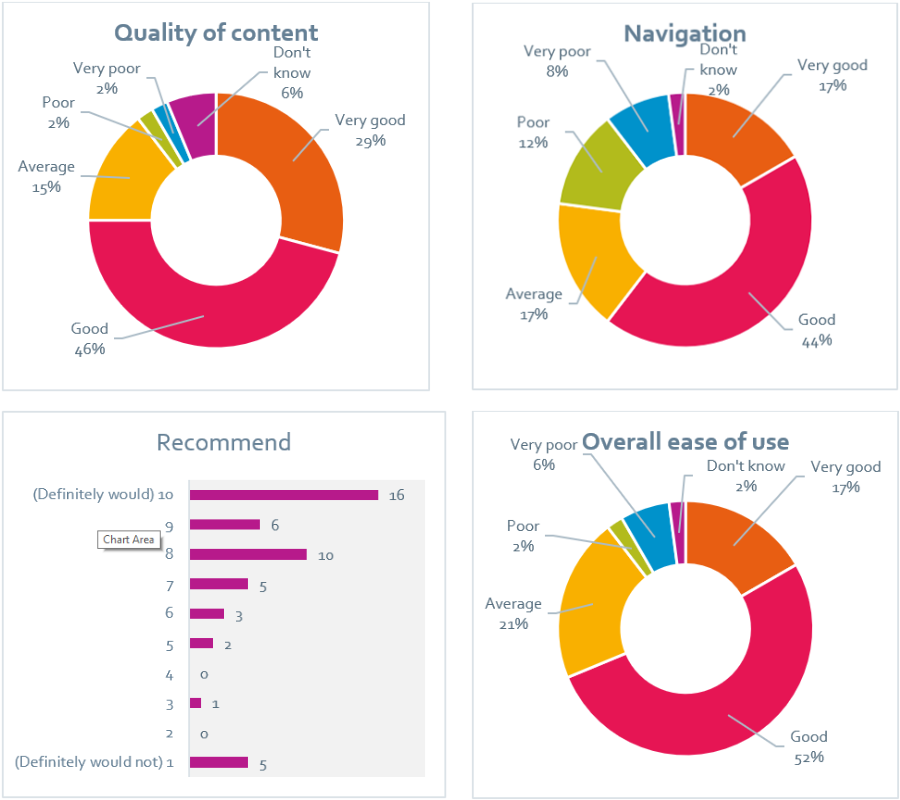

Surveys
The most recent user survey took place between 31st October and 1st of December 2017. 41 responses were received from 36 institutions (including 1 FE College), with 12% of respondants indicating they did not belonging to any particular institution. Some highlights can be found below as well as links to the full report.
2017 Survey Results
66% of users were satisfied with Journal Archives. 36% of those that said they did not know were first time users.
Quality of content and visual design and aesthetics were both rated highly (94% and 86% respectively)
73% of respondants agreed that their work would take longer without Journal Archives.
70% of respondants requested the addition of more content into Journal Archives.
Changes made in response to feedback
| You said | We did |
|---|---|
| Provide more user guides - particularly short introductory videos | The Journal Archives support pages and the Journal Archives Youtube page contains some support videos The online Quick Reference Guide page has been updated, as has the Quick Reference PDF document. |
| Add more content to Journal Archives in preference to tools to view the current content | 50 new titles have been added to Journal Archives from the Proquest Periodicals Archive Online. The addition of data from British Periodicals I and II is "in development" (See our Development Roadmap) |
Full Report
The full report can be accessed below as a PDF (725KB)

Top of page
2014-15 Survey Results
The Journal Archives user satisfaction survey ran from 13 January to 31 March 2015. A pop-up prompt appeared after logging into the platform and 48 responses were received from the community. Some highlights can be found below as well as a link to the full report.
Supporting comments from the feedback:
It draws multiple sources into one place and makes it easy to search relevant topics as well as titles.
Seems like a remarkably impressive resource, and very nicely presented. I am rather surprised I was not previously aware of it.
Enables me to obtain historical works
The new Journal Archives platform was released on 23 June 2014, replacing the previous Jisc Journal Archives platform. Journal Archives uses different search software to Jisc Journal Archives and includes a new custom-designed interface. If comparisons are made with previous surveys, respondents were referring to the Jisc Journal Archives platform.
Summary of feedback
We were pleased to find that 66% of respondents selected the top three highest recommendation ratings of 8, 9 and 10, indicating that they would recommend Journal Archives to a colleague. 73% of respondents advised their overall experience of the service over the last 12 months was good and 73% agreed that their work would take longer if Journal Archives was not available.
We asked respondents to rate various aspects of the website this year and found that 75% rated the quality of the content as good, 87.5% rated the readability of the text on the support pages as good and 79% rated the visual design as good. There were slightly more mixed results for site search (62% rated it as good but 15% rated it as poor) and navigation (60% rated it as good but 21% rated it as poor).
We asked what people liked about the service and respondents commented on the the fact that they could use one interface to view muliple sources of journals.
We also asked how the service could be improved. A range of suggestions were made including improved search, more content and improved citation downloads.
Our response to the user feedback
You said...
More journals
More directions
We did...
- Additonal help information added to the support pages
- Plans to add further content in the future
Full Report
The full report can be accessed below as a PDF (279KB)
Top of page
2013-14 Survey Results
This report covers the previous platform (Jisc Journal Archives). The full report can be accessed below as a PDF (980KB)
Top of page